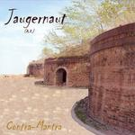

| Artist: | Jaugernaut |
| Title: | Contra-Mantra |
| Label: | self produced |
| Length(s): | 57 minutes |
| Year(s) of release: | 2005 |
| Month of review: | [05/2006] |
| 1) | Anthem | 12.32 |
| 2) | The Damage Is Done | 4.59 |
| 3) | Better Living Thru Anarchy | 5.19 |
| 4) | The Hard Way | 14.51 |
| 5) | Vanity | 6.28 |
| 6) | Different World | 5.43 |
| 7) | All I See Is Gray | 7.12 |
We move right into The Damage Is Done. Strangely, the previous song mentioned the word damage, so do the final three minutes actually belong there? Of course, the chorus of this second track belongs with the title. The musical style is more much in the direction of AOR with catchy choruses and other bits of ear candy. Notwithstanding its accessibility Jaugernaut does manage to come up with pleasing melodies that stick in the head. But when they do the same with instruments, it turns out that the melodies are a bit too accessible for my tastes.
Better Living Thru Anarchy opens with a very untypical rhythm. There is something reggae-like about it, but it is not really easy going. At 45 seconds we get a very abrupt break into something else. This type of transition does not help the natural flow of the album. For the rest, the song has the strong vocals and the catchy melodies we have grown used to.
The Hard Way the second and final epic of the album. It opens with soundtrackish music, and then veers of into a rhythmic interlude. Then the music dies down and we get repetitive spoken samples. There is something neo-classical about the proceedings here, but any moment now, I expect to arrive back in AOR/pomprock territory? But we go slow this time, with the acoustic guitar retreating to the excellent leading theme of The Anthem. The band show a strong liking for harpsichord playing, because here we find it again. Indeed, keyboards of various kinds seem more popular than guitars on this album. On an epic this size, the band likes to introduce various filmic interludes, and although nice, I am not sure whether this is good for the flow of the album. Here it works as a transition to a different vocal part. The second part has plenty of vocals hazily intertwining, with the banjo jangling in the back.
Vanity sounds by now familiar with catchy vocals and vocal harmonies, a bouncy guitar line, nicely punctuated and accompanied by brimming organ. This is probably where the band is at its strongest: compact and catchy with a full sound. There is a glamhardrockish feel to this one. The lyrics are fun too. Then I guess we enter the mantra part with strongly repetitive percussion, lined by weird electronics. And we are still in the same track. I think this album could have been done with more shorter tracks (without changing the music). Different World actually follows the same pattern, catchy at first, but ending with plenty of percussion.
All I See Is Gray opens with an orchestral sample, and then bring us repetitive acoustic guitar. I hear violin here, and later we get plenty of orchestral elements, ending in an anthemic guitar solo.